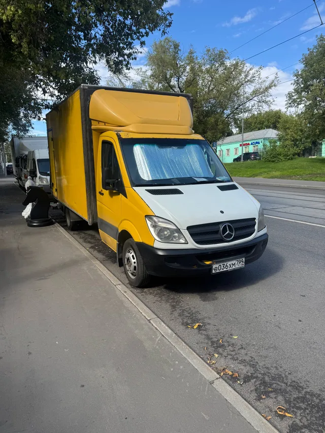
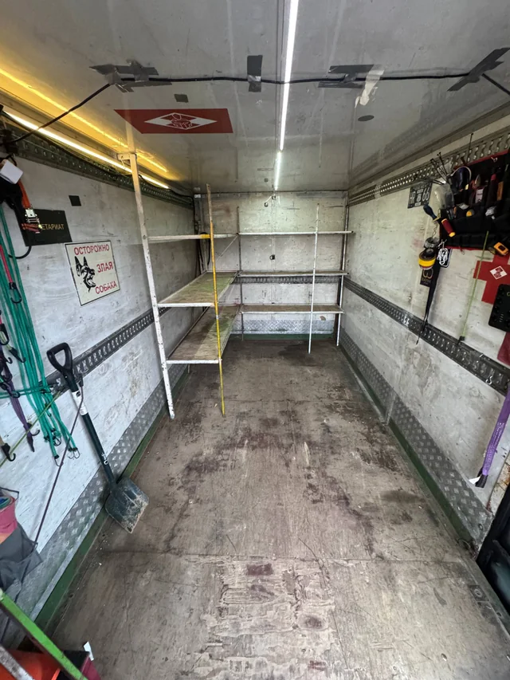
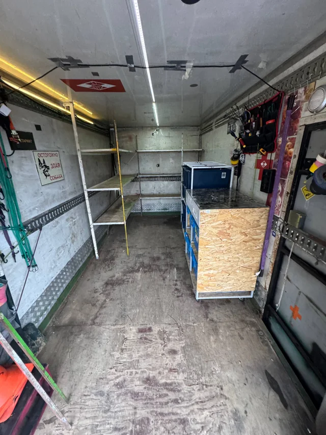
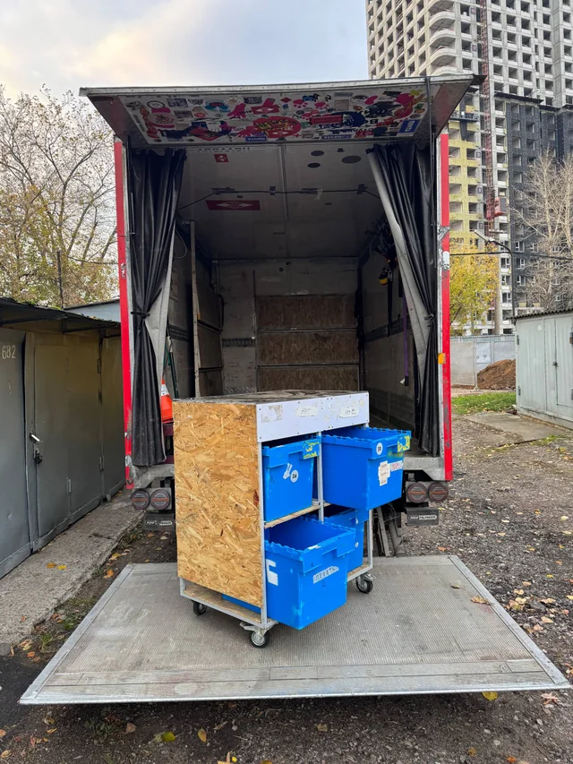
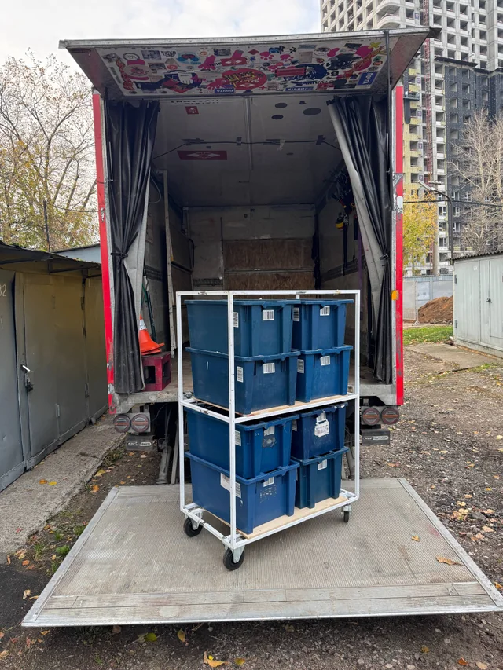
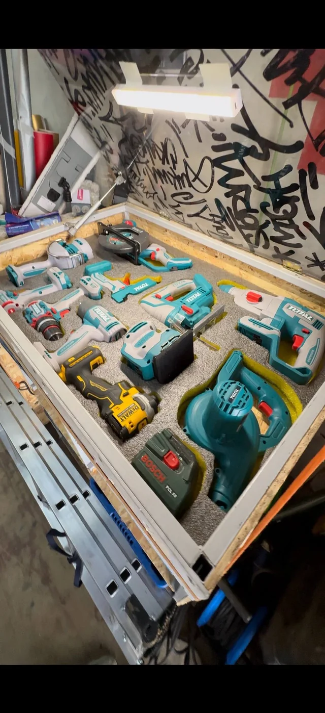
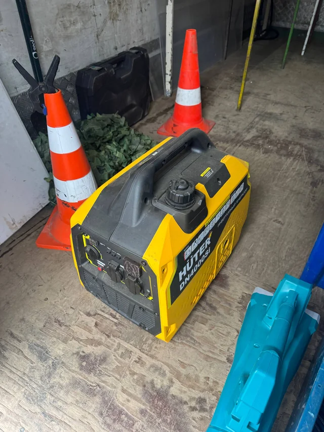
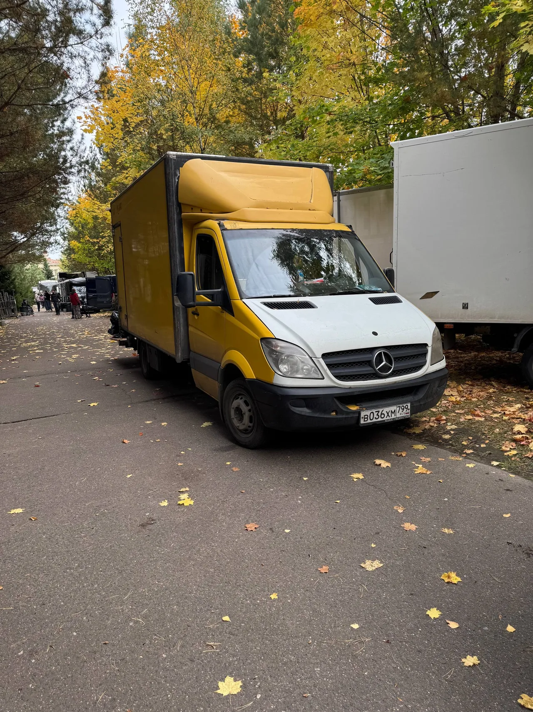

Реквизит
на вашей точке.
Доставка реквизита и материалов в рамках работы худвагена: соберём по согласованным адресам и привезём на площадку. После смены - возврат или следующий съёмочный день.
МОСКВА И ОБЛАСТЬ / ДЛЯ ХУДОЖЕСТВЕННОГО ЦЕХА
Привезём реквизит и материалы.
На площадке кузов станет рабочей базой вашего цеха.
14 000 ₽ / 12 рабочих часов машина + водитель

ЭТО НАША МАШИНАДоставка реквизита и материалов в рамках работы худвагена: соберём по согласованным адресам и привезём на площадку. После смены - возврат или следующий съёмочный день.
Кузов со стеллажами для материалов и реквизита. Задняя погрузка и гидроборт; комплект обсудим под задачу.
Марат - владелец и водитель худвагена. Можно отдельно договориться о сборке и монтаже декораций, каркасов, подиумов, фотозон и стендов, обшивке и демонтаже. Монтаж доступен и без машины; состав работы и оплату согласуем под задачу. Монтаж декораций ↗
Иллюстрация идеи.
Настоящая машина - ниже.
ХУДВАГЕН В ДЕЛЕ
Марат за рулём. Жёлтый Sprinter на точке. Дальше начинается работа художественного цеха.
Марат за рулём. Жёлтый Sprinter на точке. Дальше начинается работа художественного цеха.
Стеллажи у борта и свободный проход. Состав, размеры и вес груза согласуем до выезда.
Ящики и рабочая поверхность на колёсах. Нужные тележки и помощь при погрузке обсуждаем заранее.
Тележки у борта, материалы и инструмент рядом. Комплект и участие Марата в работе согласуем под проект.
ЗА КАДРОМ. ЗАТО В ДЕЛЕ.
Реквизит, материалы, конструкции. Подготовка, точка, возврат. Худваген входит в ритм проекта вместе с командой.
ДЕНЬ СЪЁМКИ НАЧИНАЕТСЯ РАНЬШЕ
Строймагазины и рынки. Список, бюджет и участие Марата обсуждаем заранее.
Забираем материалы и реквизит по согласованным адресам Москвы и Московской области.
Приезжаем на точку. Сверяем доступ и место для рабочей базы.
Материалы и рабочее пространство рядом. Помощь руками - по договорённости.
Обратный вывоз или следующий съёмочный день по плану команды.
НАСТОЯЩАЯ МАШИНА / ФОТО МАРАТА
Mercedes Sprinter с водителем для реквизита и материалов художественного цеха. Посмотрите на машину снаружи и на два варианта организации кузова.
Тележки, инструмент и генератор ↓На связи и за рулём - сам Марат. Маршрут, время подачи и условия погрузки обсуждаем до выезда.

Стеллажи вдоль борта и свободное пространство между ними. Размеры и вес реквизита сверяем перед загрузкой.

Тележки с ящиками размещены у борта, рядом со стеллажами и настенным инструментом. На фото видно, как организовано рабочее пространство.
ОРГАНИЗАЦИЯ КУЗОВА ПОД ЗАДАЧУ
На фотографиях один и тот же кузов: со свободным проходом и с тележками у борта. Размещение груза и нужного оснащения можно заранее обсудить под вашу съёмку.
Пришлите список реквизита, размеры и вес крупных предметов. С Маратом согласуйте, что нужно перевезти и какое оснащение понадобится.
Стеллажи и ящики помогают организовать материалы и инструмент рядом с командой. Покажите, какое рабочее пространство вам нужно.
Обсудите обратный вывоз реквизита или следующий съёмочный день. Размещение вещей и маршрут зависят от плана проекта.
До выезда: как подготовить реквизит к перевозке.
ОСНАЩЕНИЕ / ДЕТАЛИ КРУПНЫМ ПЛАНОМ
Тележки, ящики и инструмент на фотографиях Марата. Нужный набор, доступность и условия использования согласуем перед выездом.

Рабочая поверхность сверху, выдвижные ящики снизу. На снимке тележка стоит на опущенном гидроборте.

Отдельные контейнеры для организации материалов и мелкого реквизита. Состав и размещение вещей обсуждаем под проект.

Инструмент хранится в отдельных посадочных местах. Для сборки и монтажа заранее согласуйте нужный набор и участие Марата. Подробнее о монтаже ↗

Генератор обсуждается отдельно от базовой аренды машины. Мощность и доступность уточняйте перед выездом. Стоимость и условия ↗
Фотографии показывают оснащение машины. Что потребуется именно вам и что входит в согласованную стоимость, уточните у Марата до заказа.
Перед заказом уточните, какое оснащение входит в аренду.
ПОЛЕВЫЕ ЗАПИСКИ / TELEGRAM
Работа худвагена на реальных локациях. @Art_mmm_mmm

КОРОТКО О ДЕЛЕ
Одна машина с владельцем-водителем для художественного цеха. Основные выезды - Москва и Московская область; другие регионы - по договорённости. Даты, маршрут, груз и комплект сверяем перед выездом.
Бензин для генератора оплачивается отдельно. Мощность и доступность комплекта уточняются. Итоговые условия, километраж и участие в работах согласуются с Маратом. Работа по договору и актам через ИП.
Свяжитесь с Маратом по телефону, в Telegram или MAX. Сообщите даты съёмок, адреса, маршрут и состав груза. До заказа сверим габариты, вес, нужный комплект и итоговые условия. Базовая смена - 14 000 ₽ за 12 рабочих часов, машина и водитель. Свободные даты Марат подтвердит лично.
Машина работает с реквизитом и художественным цехом. Если нужен автомобиль как часть сцены в кадре, сообщите об этом отдельно.
Ориентир по данным владельца: 4,2 × 2,2 × 2,2 м. Точные размеры, допустимый вес и возможность перевозки конкретного груза нужно проверить с Маратом до заказа.
Нужный набор инструмента, тележки и условия их использования согласуются с Маратом перед заказом. Генератор оплачивается отдельно по указанным условиям. Монтаж и помощь руками также обсуждаются отдельно от аренды машины с водителем. Фотографии оснащения.
На фотографиях показаны варианты со свободным проходом между стеллажами и с тележками у борта. Перед выездом обсудите с Маратом состав груза, его размеры и вес, нужное оснащение и рабочее пространство на площадке. Посмотреть варианты организации кузова.
Возможность перевозки конкретных декораций и конструкций согласуйте с Маратом по их габаритам и весу. Сообщите также условия погрузки, доступ к площадке и необходимость обратного вывоза. Сборку, монтаж и демонтаж можно обсудить отдельно.
Даты, адреса, состав груза, фотографии, размеры и вес, время подачи, условия погрузки и доступ на площадку. Сообщите, нужен ли возврат после смены. Маршрут, возможность перевозки и стоимость согласуйте до заказа.
ПРОДАКШЕНУ НУЖЕН СВОЙ ЧЕЛОВЕК
Расскажите про даты, локацию и задачу. Марат ответит лично и сориентирует по машине и участию в проекте.